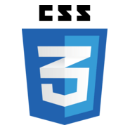
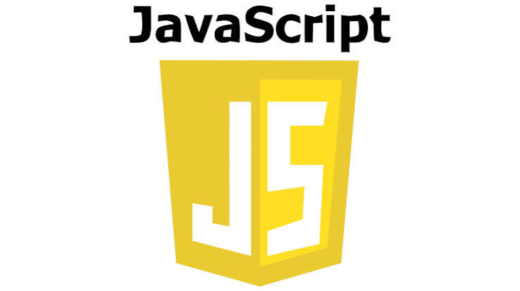
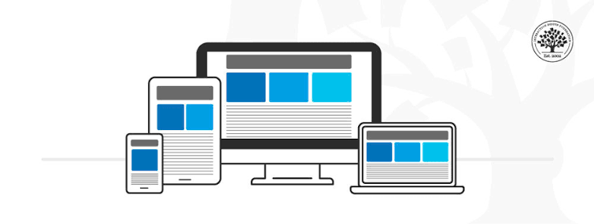

I have a growing knowledge of web development and enjoy creating clean, attractive, and user-friendly websites. I am continuously learning new technologies and improving my skills to build better digital experiences.
I have a growing knowledge of web development and enjoy creating clean, attractive, and user-friendly websites. I am continuously learning new technologies and improving my skills to build better digital experiences.

I use CSS3 to style web pages, create attractive layouts, add colors, customize fonts, and improve the overall appearance of websites. I also practice using Flexbox and Grid to create organized layouts.

JavaScript is a programming language I use to add interactivity and dynamic functionality to websites, creating engaging and user-friendly experiences.
I use Git to track changes in my code, manage different versions of my projects, and keep my work organized. It helps me monitor my progress, review previous changes, and work more efficiently when developing websites. I am continuously improving my knowledge of Git commands and version control to manage my projects effectively.

I focus on creating websites that adapt to different screen sizes, including mobile phones, tablets, and desktop computers, to provide users with a smooth browsing experience.
And i believe that learning never stops in technology. I am committed to improving my skills, practicing regularly, and building projects that demonstrate my creativity, dedication, and passion for web development.